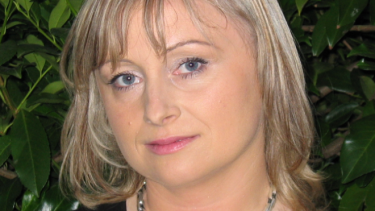
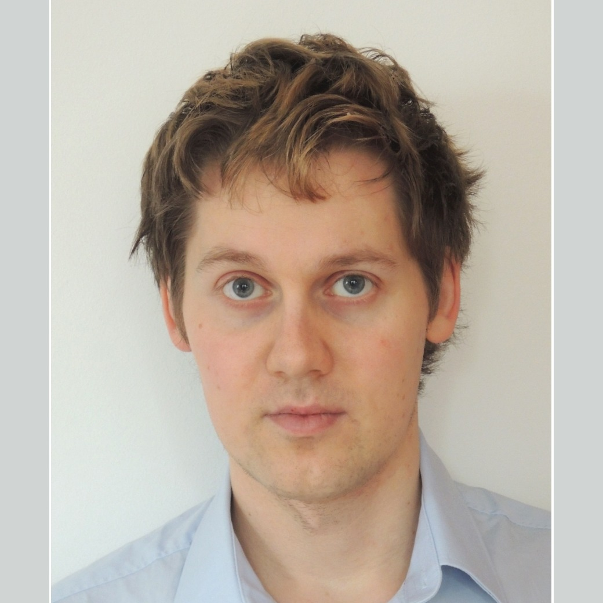
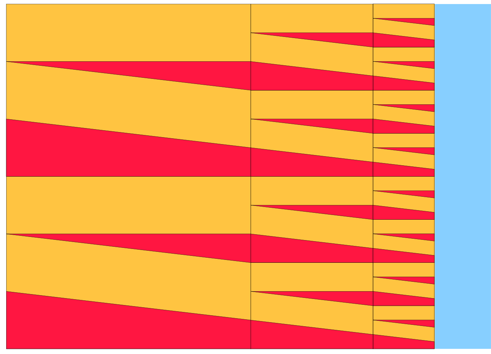
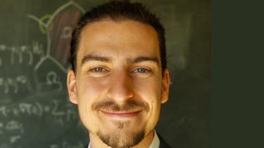
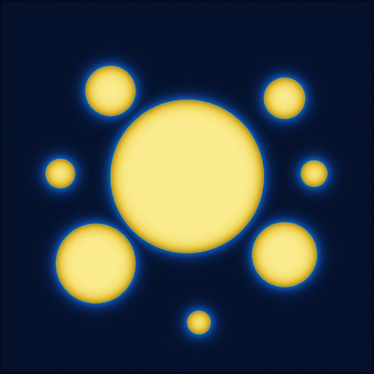
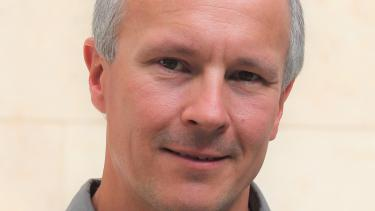

Research ThemesForschungsthemen
The research groups of the Applied Analysis section share a common scientific foundation rooted in partial differential equations and variational methods, with a strong interest in applications from the natural and biomedical sciences. Mathematical tools from functional analysis and measure theory play a central role across all groups. A unifying theme is the mathematical understanding of multiscale phenomena — the connection between detailed models and their effective description at larger scales — encompassing rigorous analysis of emergence, pattern formation, and collective behaviour.
Die Forschungsgruppen der Sektion Angewandte Analysis teilen ein gemeinsames wissenschaftliches Fundament, das in partiellen Differentialgleichungen und Variationsmethoden verwurzelt ist, mit einem ausgeprägten Interesse an Anwendungen aus den Natur- und Biowissenschaften. Mathematische Werkzeuge aus Funktionalanalysis und Maßtheorie spielen in allen Gruppen eine zentrale Rolle. Ein verbindendes Thema ist das mathematische Verständnis von Mehrskalen-Phänomenen — die Verbindung zwischen detaillierten Modellen und ihrer effektiven Beschreibung auf größeren Skalen — einschließlich rigoroser Analysis von Emergenz, Musterbildung und kollektivem Verhalten.
MethodsVariations-
methoden Partial DEsPartielle DGL Gradient FlowsGradientenflüsse Calculus of
VariationsVariations-
rechnung Phase-field
ModelsPhasenfeld-
Modelle Ginzburg-LandauGinzburg-Landau Geometric FlowsGeometrische Flüsse Mean Curvature
FlowMittl.
Krümmungsfluss Free Boundary
Probs.Freie Rand-
wertprobleme Nonlocal
EnergiesNichtlokale
Energien Sharp InterfacesScharfe Grenzflächen Spectral TheorySpektraltheorie Measure-valued
PDEsMaßwertige
PDE Reaction-Diffusion
SystemsReaktions-
Diffusionssysteme Pattern FormationMusterbildung Math. BiologyMath. Biologie Many-body QMVielkörper-QM Data ScienceData Science Stem Cell
DynamicsStammzell-
dynamik Math. PhysicsMath. Physik Schrödinger Op.Schrödinger-Op. Fluid DynamicsFluiddynamik MicromagnetismMikromagnetismus
Hover a term to highlight related research groups belowBegriff anzeigen, um verwandte Forschungsgruppen hervorzuheben

Applied Analysis and Modelling in Biosciences ↗Angewandte Analysis und Modellierung in den Biowissenschaften ↗
Research combines rigorous mathematical analysis with biological and medical applications, developing and studying models for self-organisation, pattern formation, and structure formation in living systems. Topics range from reaction–diffusion–ODE systems describing stem cell dynamics and tissue growth to problems in developmental biology. The group maintains strong interdisciplinary connections to experimental biology and medicine.
Die Forschung verbindet rigorose mathematische Analysis mit biologischen und medizinischen Anwendungen und entwickelt Modelle für Selbstorganisation, Musterbildung und Strukturbildung in lebenden Systemen. Themen reichen von Reaktions-Diffusions-ODE-Systemen zur Beschreibung der Stammzelldynamik und des Gewebewachstums bis hin zu Fragen der Entwicklungsbiologie. Die Gruppe pflegt enge interdisziplinäre Verbindungen zur experimentellen Biologie und Medizin.


Calculus of Variations and PDEsVariationsrechnung und PDGl
Research focuses on variational problems and partial differential equations motivated by questions in materials science and fluid dynamics. Topics include the analysis of pattern formation, nonlocal interaction energies, free boundary problems, and the derivation of effective continuum models from microscopic descriptions. A recurring theme is the competition between local and nonlocal energy contributions that drives pattern formation across scales.
Die Forschung konzentriert sich auf Variationsprobleme und partielle Differentialgleichungen, motiviert durch Fragestellungen in der Materialwissenschaft und Strömungsmechanik. Themen umfassen die Analysis von Musterbildung, nichtlokale Wechselwirkungsenergien, freie Randwertprobleme und die Herleitung effektiver Kontinuumsmodelle aus mikroskopischen Beschreibungen. Ein wiederkehrendes Thema ist das Zusammenspiel lokaler und nichtlokaler Energiebeiträge, das skalenübergreifende Musterbildung antreibt.


Applied Geometric Analysis ↗Angewandte Geometrische Analysis ↗
The group studies geometric evolution equations and their connections to variational calculus and mathematical physics. Central themes include mean curvature flow and its sharp-interface limits, phase-field approximations for interfacial dynamics, and applications in materials science and data science. A key focus is the development of rigorous convergence theories bridging diffuse and sharp interface models.
Die Gruppe untersucht geometrische Evolutionsgleichungen und deren Verbindungen zur Variationsrechnung und mathematischen Physik. Zentrale Themen umfassen den mittleren Krümmungsfluss und seine Grenzwerte bei scharfen Grenzflächen, Phasenfeld-Approximationen für Grenzflächendynamik sowie Anwendungen in der Materialwissenschaft und Datenwissenschaft. Ein wichtiger Schwerpunkt ist die Entwicklung rigoroser Konvergenztheorien, die diffuse und scharfe Grenzflächenmodelle verbinden.

Mathematical PhysicsMathematische Physik
Research at the interface of analysis and mathematical physics, with a focus on many-body quantum mechanics, the derivation of effective theories (Hartree–Fock, Bogoliubov, Gross–Pitaevskii) from first principles, spectral estimates for Schrödinger operators, and variational problems arising in quantum chemistry and condensed matter physics.
Forschung an der Schnittstelle von Analysis und mathematischer Physik, mit Schwerpunkt auf Vielteilchen-Quantenmechanik, der Herleitung effektiver Theorien (Hartree-Fock, Bogoliubov, Gross-Pitaevskii) aus ersten Prinzipien, Spektralabschätzungen für Schrödinger-Operatoren sowie Variationsproblemen in der Quantenchemie und Festkörperphysik.

Analysis and PDEsAnalysis und PDGl
Research interests span partial differential equations and their applications in the natural sciences, with particular interest in hyperbolic conservation laws, free boundary problems, and the mathematical modelling of biological and physical systems — including cell motility, fluid dynamics, and epidemic spread.
Forschungsinteressen umfassen partielle Differentialgleichungen und ihre Anwendungen in den Naturwissenschaften, mit besonderem Interesse an hyperbolischen Erhaltungsgleichungen, freien Randwertproblemen und der mathematischen Modellierung biologischer und physikalischer Systeme — einschließlich Zellbeweglichkeit, Strömungsmechanik und Epidemieausbreitung.